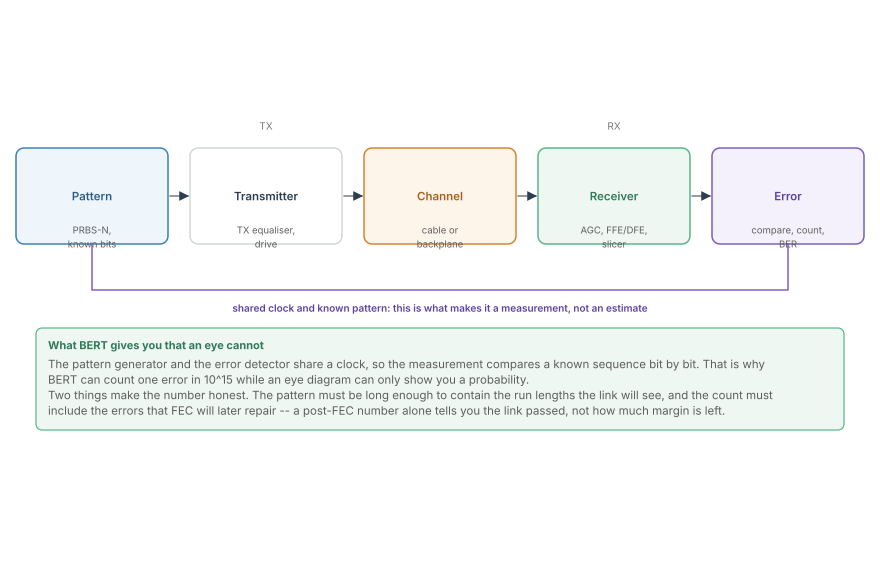
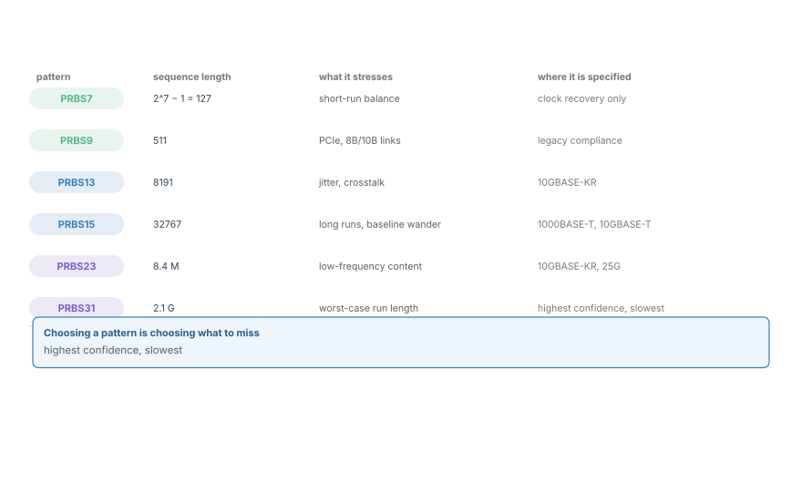
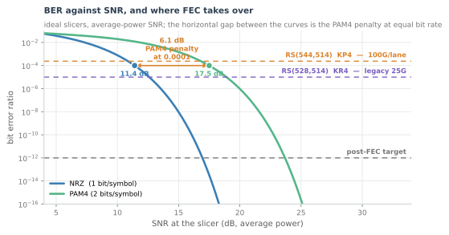
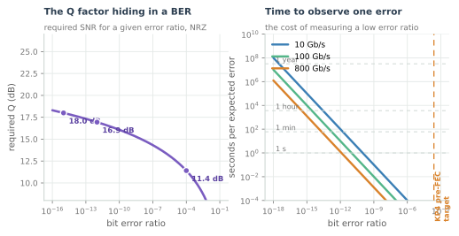
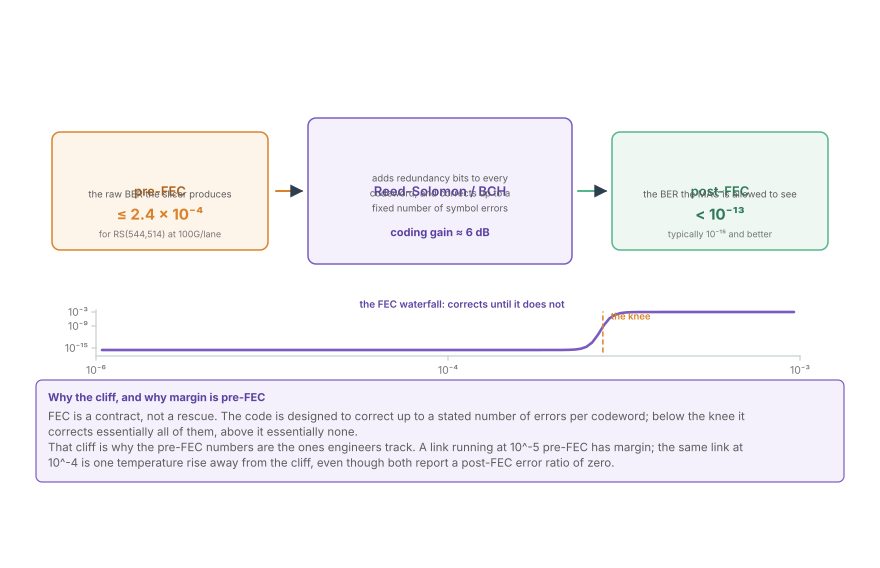

BERT, BER and the FEC Contract
The measurement that justifies everything else: PRBS patterns, the bathtub curve, the Q-factor behind the numbers, and the pre-FEC error ratio a Reed-Solomon code is allowed to see.
Everything in the previous two chapters is an inference. The link budget infers an error ratio from a signal-to-noise ratio; the eye diagram infers one from a picture. The bit error ratio test is the only measurement in this part that counts actual errors, and it is the number the product is judged on. It is also the measurement most often done wrong, because the three things that define it -- the pattern, the duration, and whether FEC has already been applied -- are each easy to get wrong in a way that produces a clean, believable, meaningless result.
This chapter is the measurement itself, and the contract that gives it meaning.
The measurement loop

A bit error ratio test compares a received bit stream against the bit stream that was sent. That is only possible if the receiver knows the pattern, which is why BERT uses a pseudo-random bit sequence: a deterministic sequence generated by a shift register with feedback, long enough to look random to the link, and reproducible exactly at the other end.
The structure is simple and the honesty is in the details:
- One clock, two ends. Generator and detector share a clock, or recover the same one. Without that, you are measuring the clock.
- The pattern must be known and matched. Generator and detector must agree on which PRBS and where the sequence starts. A detector that has not synchronised reports a 50% error ratio, which is a useful failure signature.
- The count is of bits, not of anything else. BER is errors divided by bits examined. Bits examined is what makes the number's confidence interval, and it is the parameter most often left unreported.
The pattern is part of the result
A PRBS-N is generated by an N-bit shift register, so it contains every run length up to N bits but no run longer than that. That limit is the whole reason the choice matters.

A long run of identical bits is the worst case for anything AC-coupled. The coupling capacitors in the signal path charge during a long run and drift during a long run of the opposite polarity, which moves the baseline underneath the signal. That is baseline wander, and a pattern that does not contain the run length cannot see it.
| Pattern | Sequence length | What it exercises |
|---|---|---|
| PRBS7 | 127 | clock recovery, short-run balance |
| PRBS9 | 511 | legacy 8B/10B compliance |
| PRBS13 | 8191 | jitter, crosstalk (10GBASE-KR) |
| PRBS15 | 32767 | long runs, baseline wander (1000BASE-T) |
| PRBS23 | 8.4 million | low-frequency content (10GBASE-KR, 25G) |
| PRBS31 | 2.1 billion | worst-case run length, highest confidence |
The trade is time. Each extra bit of pattern doubles the sequence and doubles how long a full repetition takes, while the error ratio you are trying to resolve does not change. Proving 10⁻¹² with a PRBS7 that repeats every 127 bits is not a measurement of the link; it is a measurement of 127 bit positions, repeated.
The bathtub, and the Q factor behind it
The previous chapter introduced the bathtub curve as an eye measurement. From the BERT side it is the same curve obtained differently: hold the sampling phase, measure the error ratio, move the phase, repeat.

The curve is the Gaussian tail probability, and it is worth having its shape in your head without a calculator:
where $d$ is the eye spacing at the slicer and $\sigma$ is the total noise. The argument of $Q$ is the distance from the decision threshold to the rail, in units of the noise standard deviation. Engineers call that ratio the Q factor, quote it in decibels as $20\log_{10}Q$, and use it as shorthand: Q = 7 is about 10⁻¹², Q = 6 is about 10⁻⁹, Q = 4.75 is about 10⁻⁶.
Three facts make that formula a design tool:
- Every decibel of signal-to-noise ratio buys roughly a factor of ten in error ratio in this region. That is the single most useful scaling law in link design.
- PAM4's penalty appears as a horizontal shift. The figure measures it: at 10⁻⁴, PAM4 needs about 8.5 dB more signal-to-noise ratio than NRZ at the same bit rate. Part of that is the third-height eye; part is that each symbol carries two bits.
- The curve is steep, and steepness is the point. A link sitting at 10⁻¹² is one or two decibels from 10⁻⁶. That is why margin matters more than the nominal number.

The right-hand panel is the measurement cost nobody budgets for. At 10⁻¹² and 100 Gb/s, one error arrives every 100 seconds on average. At 10⁻¹⁵ -- a post-FEC target -- it arrives every 30 hours. You cannot measure that number directly in a lab slot; you measure a pre-FEC number you can reach, and rely on the code's known gain to get from there to the target.
The FEC contract
Forward error correction changes the meaning of the error ratio, and the change is a contract with two numbers.

- Pre-FEC is what the slicer produces, before the code. This is the number the link budget and the eye diagram predict, and the number an engineer tracks as margin.
- Post-FEC is what the MAC sees. This is the number the product is specified against.
- Coding gain is the difference, expressed in decibels. A Reed-Solomon code of the strength used in Ethernet buys roughly 6 dB at its design point.
The reason the pre-FEC number is the one to watch is the shape of the code's behaviour. FEC does not degrade gracefully; it works almost perfectly below a threshold and then stops working almost entirely above it.
For the RS(544, 514) code used at 100G per lane, the code corrects up to 15 symbol errors in a 544-symbol codeword, which puts the cliff at a pre-FEC error ratio of about 2.4 × 10⁻⁴. Below it, essentially every error is repaired. Above it, the codeword is uncorrectable, and the error ratio at the MAC rises by many orders of magnitude.
The cliff is why compliance is specified the way it is: a standard names a maximum pre-FEC error ratio on a specified test channel, not a post-FEC error ratio, because the pre-FEC number is the one that leaves margin for the real world. A port that just barely passes the post-FEC test has no margin at all.
Reading a BERT result
A BERT run is a set of numbers, and the set is what makes it interpretable. The shape of a result tells you where to look:
- A wide bathtub with a high floor. Random noise dominates. The eye is open but the signal-to-noise ratio is short. Look at the link budget.
- A narrow bathtub with a low floor. Jitter dominates. The eye is tall but not wide. Look at the transmitter's clock and the timing recovery loop.
- A floor that does not improve with more averaging. The errors are deterministic: pattern-dependent ISI, a reflection, or a bit that is genuinely always wrong. More time will not help.
- A cliff-shaped result right below the codeword threshold. The FEC is doing its job, but the margin is gone.
- A 50% error ratio. The detector is not synchronised, or the pattern does not match. This is not a link failure.
Where this connects
- BERT is the only direct measurement of the error ratio; everything else in this part is an inference from the eye or the budget.
- The Q factor connects the error ratio to the signal-to-noise ratio from the link-budget chapter, and the Gaussian tail is why one decibel buys a decade.
- Pre-FEC error ratio is the margin gauge; the FEC cliff is at roughly 2.4 × 10⁻⁴ for the code used at 100G per lane.
- The bathtub is the eye diagram's horizontal slice, so the two chapters measure the same thing in different domains.
- The pattern belongs to the transmitter and the channel, which is why the next chapter looks at the spectrum those two produce.
In the optical link
The vocabulary is identical and the numbers are different. A coherent optical link is specified by its pre-FEC error ratio on a back-to-back reference and by its OSNR penalty at that error ratio. The codes are stronger -- oFEC and its relatives reach further into the tail than RS(544, 514) -- and the thresholds are quoted the same way, as a maximum pre-FEC ratio the decoder is contracted to repair.
Shot noise and thermal noise replace ISI as the floor. Where a copper lane's bathtub floor is set by equaliser noise gain and residual ISI, an optical receiver's is set by the photodiode's shot noise, the transimpedance amplifier, and the local oscillator's relative intensity noise. The bathtub shape is the same; the diagnosis is different.
Q is quoted directly in optics. Optical engineers talk about a Q of 7 or 8 for a 10⁻¹² target, exactly as this chapter defines it, and the OSNR requirement follows from Q through the receiver's noise bandwidth. That is why the two fields can share a compliance discussion without translation.
And the cliff matters more, not less. Optical links run closer to their coding threshold than copper ones, because every decibel of OSNR is expensive over 1000 km. The pre-FEC margin is the number the whole system is designed around, and Chromatic Dispersion and the Frequency-Domain Equaliser exists to buy some of it back after the fibre has spent it.